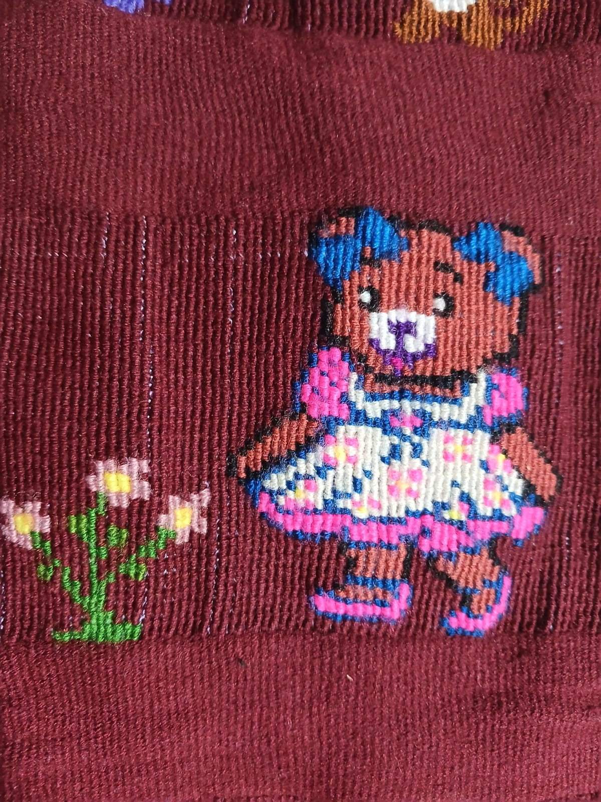

Colocar aquí el contenidopa class"C
Colocar aquí el contenidopa class"C Op953186442araNTENEDO
Op953186442araNTENEDO RMuseo Textil de OaxacaPIE"
RMuseo Textil de OaxacaPIE"
ACERCA DE NUESTRA COMUNIDAD
SAN MARTIN ITUNYOSO
Hace mucho tiempo, cerca de un agujero en el cerro, cuenta la leyenda que aparecieron tres hermanos. Cada uno se quedó en un lugar diferente: Francisca en San Andrés Chicahuaxtla, Juan en San Juan Copala y Martín enSan Martín Itunyoso. Ellos enseñaron a las mujeres los materiales y el proceso para tejer el huipil, una prenda que con el tiempo se volvió parte importante de la identidad del pueblo.
Antes, el huipil se elaboraba con lana de borrego y algodón, y se teñía con materiales naturales como encino y tierra china. Los colores más usados eran blanco, anaranjado, amarillo y verde. Con el paso del tiempo, comenzaron a utilizarse hilos de estambre de muchos colores, como rojo, rosa, azul y negro, e incluso hilo de cristal para hacer los diseños más llamativos.

Colocar aquí el contenidopa class"COp953186442araNTENEDORMuseo Textil de OaxacaPIE"
Cecyteo Emsad Itunyoso
Cecyte Oaxaca